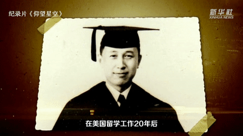

他是中国的“航天之父” 中国共产党的优秀党员 享誉海内外的杰出科学家 他就是钱学森 钱学森大学毕业后 考取清华大学公费留学生 1935年去美国 先后获得航空工程硕士学位 航空、数学博士学位

1955年，钱学森回国 3年后加入中国共产党 “所有这一切都是在作准备， 为了回到祖国后能为人民做点事。” 中央档案馆保存着钱学森 1959年9月24日撰写的自传 自传里他追忆了自己选择信仰的历程 “我当时是信服科学的社会主义的， 对国民党的那一套不信了， 觉得要中国能得救，要世界能够大同， 只有靠共产党。”